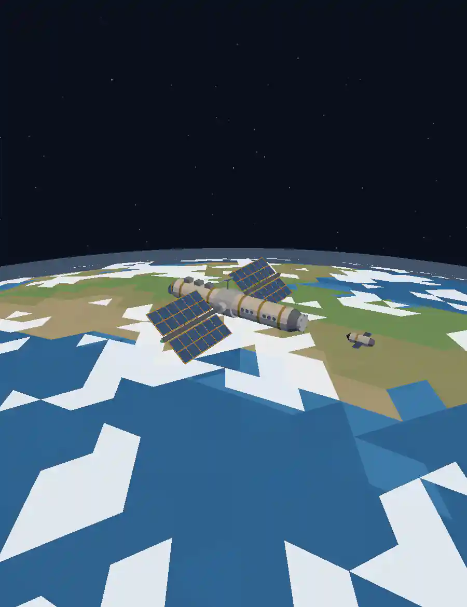

거주 모듈
정거장 앞쪽
승무원이 먹고 자는 긴 원통이에요. 지구 밤 쪽에서는 둥근 창마다 불이 켜져요.

지구 위를 도는 작은 정거장이에요. 명소 5곳을 둘러볼 수 있어요.
끌어서 정거장을 돌리고, 휠로 가까이 볼 수 있어요.
옆으로 밀어 정거장을 돌리고, 두 손가락으로 가까이 볼 수 있어요.
명소를 고르면 그곳으로 가까이 가요.
목록에서 명소를 고르면 설명을 볼 수 있어요.
정거장 앞쪽
승무원이 먹고 자는 긴 원통이에요. 지구 밤 쪽에서는 둥근 창마다 불이 켜져요.
정거장 뒤쪽
실험 장비가 모인 원통이에요. 바깥에 붙은 실험 상자 3개도 보여요.
양옆 날개
정거장에 전기를 대는 날개 4장이에요. 해를 따라 각도를 천천히 바꿔요.
앞쪽 끝
화물선이 와서 붙는 문이에요. 작은 화물선이 천천히 다가와 붙는 모습을 볼 수 있어요.
뒤쪽 끝
지구를 내려다보는 둥근 창이에요. 밤 쪽에서는 창 너머로 도시 불빛이 보여요.